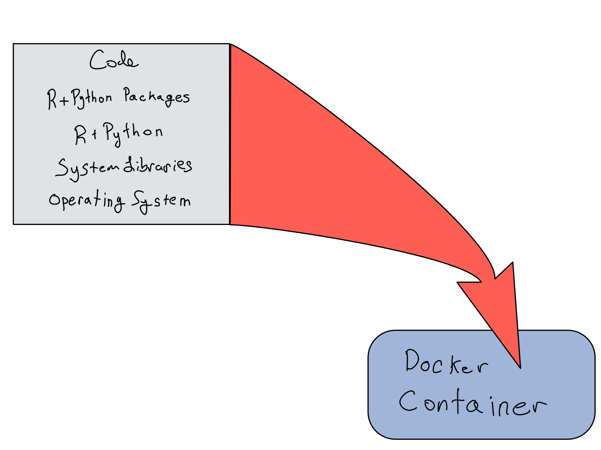

1 Environments as Code
Creating a data science project is like cooking a delicious meal.
In this analogy, your data are the raw ingredients and your code is the recipe for your meal.1
I’m not here to talk much about your ingredients or your recipes.
Instead, I’m here to talk about your pantry and your kitchen.
A novice cook thinks prep is done once they’ve gathered their ingredients and recipes. They might chop/smush a tomato with whatever dull butter knife happens to be at hand.
But that’s not how the pros think. A pro probably has a knife just for tomatoes and they frequently – perhaps every time they use it – hone it to razor sharpness.
Regardless of your proficiency in the kitchen, you’re a pro (or aiming to be one) at data science. In this chapter, we’re going to talk about the data science equivalent of prepping your knives in your kitchen – actively managing your data science environments using code.
Kitchen metaphors aside, your data science environment is the stack of software and hardware below the level of your code, from the R and Python packages you’re using right down to the physical hardware your code runs on.

Novice data scientists are like novice cooks and think little – or not at all – about the readiness of their environment and the sharpness of their tools. One of the primary results of this is the oft-spoken, and dreaded phrase, “well, it works on my machine” after attempting to share code with a colleague or deploy an app into a different environment.
Some people who read this will just throw up their hands and say, “well, it’s impossible to make things completely reproducible, so I’m not going to bother”. And they’re kinda right.
Trying to craft an environment that’s completely reproducible is somewhat of a fool’s errand. There’s always a tradeoff. Making things more reproducible generally takes more work – in a way that’s frustratingly asymptotic.

Some industries are highly regulated and need to be able to guarantee that they can reproduce an analysis exactly – down to the layer of machine instructions – a decade later. In this world, IT/Admins take physical piece of hardware that they know runs the analysis, make a backup or two, and just keep that physical piece of hardware running for many years.
If you don’t work in such an industry, you don’t have to go all the way there. Making things 100% reproducible is really, really hard. But taking your first steps to make things more reproducible is well-worth your time.
The first step towards making environments more reproducible is to create and use Environments as Code.
The DevOps term for this is that environments are stateless. That means that there’s no secret state embedded in the environment so that functionally identical copies can be created and destroyed at whim from code.
This is often expressed in the phrase that environments should be “cattle, not pets”.
In this chapter, we’ll get into the why and how of capturing data science environments in code, saving them for later, and easily moving them around from place to place.
1.1 Environments have layers
Data science environments have three distinct layers that build on each other. Once you understand the layers of an environment, you can think more clearly about what your actual reproducibility needs are, and which environmental layers you need to target putting into code.
Layers of a Data Science Environments
| Layer | Contents |
|---|---|
| Packages | R + Python Packages |
| System | R + Python Language Versions Other System Libraries Operating System |
| Hardware | Virtual Hardware Physical Hardware |
Fundamentally, the hardware and software layers should be the responsibility of an IT/Admin. It may be the case that you’re responsible for them as well, but then you’re just fulfilling that role.
But as a data scientist, you can and should be responsible for the package layer, and getting this layer right is where the biggest reproducibility bang for your buck lies.
1.2 What is a package environment
It’s helpful to start by building a mental model of what a package environment is before we get into how to use them well.
Let’s start with an intro to the different states packages can be in.
- In a repository. You’re probably used to installing packages from a packages-specific repository like PyPI, Conda, CRAN, or BioConductor. These repositories are like the grocery store – the food is packaged up and ready to go, but inert. There’s also lots of variety – repositories hold current and archival versions of tons of different packages.
- In a library. Once you install the packages you need with
install.packages()orpip installorconda install, they’re in your library – the data science equivalent of a pantry. That library is specific to a certain environment. Importantly, libraries can hold – at most – one version of any given package. Libraries can be specific to the project, user, or shared across the system. - Loaded. Loading a package with a
libraryorimportcommand is like taking the food out of the pantry and putting it on the counter so you can actually cook with it.
In general, the library is the package environment that’s the most relevant because it’s the part you, as a data scientist, have control over.
Let’s say you work on one project for a while, installing packages from the repository into your library. Now let’s say you come back after a year of working on other projects or try to share your project with someone else.
It’s probable that future you or your colleague you won’t have the right versions and your code will break.
What would’ve been better is if you’d had an environments as code strategy that created a portable environment for each project on your system.
A successful package Environment as Code setup has two key attributes:
- Your package environment is isolated and cannot be disrupted by other activities on the same machine.
- Your package environment can easily be captured and transported elsewhere.
Both R and Python have great environments as code utilities that make it easy to do both these things.
On a high level, the workflows for these tasks are similar between R and Python. However, it’s worth noting that Python is used all the time by your system, where R is basically only ever installed for data science purposes.
That means that most tutorials on using Python start with installing a standalone data science version of Python using a virtual environment or Conda, so you may already be used to using a virtual environment.
Hopefully this chapter will help fill out your mental model of what’s going on.
In R, {renv} is the standard on this front. In Python, there are many different options. In the context of production data science, I recommend {virtualenv}/{venv} and related tools.
1.3 Using a virtual environment
Using a virtual environment tool to create an environment as code is a three-step process. This section will teach you about the process of creating and using a virtual environment – there’s a cheatsheet on the commands for both R and Python at the end of the chapter.
Step 1: Create standalone package libraries
Each project should have it’s own {renv}/{venv} library. When you start your project, it should be in a standalone directory that includes everything the project needs – including a virtual environment.
This is called a project-oriented workflow. You can do it in either R or Python. The What They Forgot to Teach You About R course (materials available online at rstats.wtf) is a great intro to a project-oriented workflow whether you work in R or Python. The tooling will be somewhat different in Python, but the idea is the same.
Some projects include multiple content items – like a project that like an app project backed up by an API and an ETL script. My recommendation is to create one virtual environment for each piece of content.
Then, every time you work on the project, you activate the virtual environment and install/activate packages in there.
One worry that can arise is that it could take up a lot of space to reinstall these packages over and over again for every project on your system. Don’t worry – {renv} and {venv} are a little cleverer than this. If you’re using the same package multiple times, it does some work behind the scenes using symbolic links to make sure that the package is actually only installed once.
Step 2: Document environment state
As you work inside your virtual environment, you’ll want to document the state of the package library. Both {renv} and {venv} have standard file formats for documenting the packages that are installed in the environment as well as the versions.
In {renv}, the file is called a lockfile and it’s a requirements.txt in {venv}.
Since all this work is occurring in a standalone package environment, you don’t have to worry about what’ll happen if you come back after a break. You’ll still have those same packages to use.
Step 3: Collaborate or deploy
When you go to share your project, you don’t want to share your actual package libraries. The actual package libraries can be large, so putting just a short lockfile or requirements file into git is definitely preferred. Additionally, package installs are specific to the operating system and the language version you’re using.
So if you’re working on a Mac with a particular set of R and/or Python versions and you collaborate or deploy to a Windows or Linux machine, you can’t share the actual package files. Those machines will need to install the required set of packages for themselves.
So you just share your lockfile or requirements.txt and your collaborator or deployment process consults that file and installs all the required packages from there.
1.4 What’s happening under the hood
Now that you understand the basic process of using a virtual environment tool, it might be helpful to understand what’s actually going on.
When you install a package, it installs into a package cache. This is just a directory full of installed packages. When you install a package, it’s installed into that directory. When you activate a library with library or import, it searches that directory and loads the library into the active session.
In R, the package cache(s) to be consulted are contained in .libPaths(). In Python it’s sys.path.
The key to virtual environments is that they monkey around with the package cache list, so both installation and loading happens from a cache that’s specific to the virtual environment.
Here’s an example. If I run .libPaths() before and after activating an {renv} environment, the first entry from the .libPaths() call changes from a user-level library /Users/alexkgold to a project-level library /Users/alexkgold/Documents/do4ds/.
> .libPaths()
[1] "/Users/alexkgold/Library/R/x86_64/4.2/library"
[2] "/Library/Frameworks/R.framework/Versions/4.2/Resources/library"
renv::activate()
* Project '~/Documents/do4ds/docker/docker/plumber' loaded. [renv 0.15.5]
.libPaths()
[1] "/Users/alexkgold/Documents/do4ds/docker/docker/plumber/renv/library/R-4.2/x86_64-apple-darwin17.0"
[2] "/Library/Frameworks/R.framework/Versions/4.2/Resources/library" Similarly, in Python it looks like this. Note that the “after” version replaces the last line of the sys.path with a project-level library:
> python3 -m site
sys.path = [
'/Users/alexkgold/Documents/python-examples/dash-app',
'/Library/Developer/CommandLineTools/Library/Frameworks/Python3.framework/Versions/3.8/lib/python38.zip',
'/Library/Developer/CommandLineTools/Library/Frameworks/Python3.framework/Versions/3.8/lib/python3.8',
'/Library/Developer/CommandLineTools/Library/Frameworks/Python3.framework/Versions/3.8/lib/python3.8/lib-dynload',
'/Library/Developer/CommandLineTools/Library/Frameworks/Python3.framework/Versions/3.8/lib/python3.8/site-packages',
]
USER_BASE: '/Users/alexkgold/Library/Python/3.8' (doesn't exist)
USER_SITE: '/Users/alexkgold/Library/Python/3.8/lib/python/site-packages' (doesn't exist)
ENABLE_USER_SITE: True
> source .venv/bin/activate
(.venv)
> python3 -m site
sys.path = [
'/Users/alexkgold/Documents/python-examples/dash-app',
'/Library/Developer/CommandLineTools/Library/Frameworks/Python3.framework/Versions/3.8/lib/python38.zip',
'/Library/Developer/CommandLineTools/Library/Frameworks/Python3.framework/Versions/3.8/lib/python3.8',
'/Library/Developer/CommandLineTools/Library/Frameworks/Python3.framework/Versions/3.8/lib/python3.8/lib-dynload',
'/Users/alexkgold/Documents/python-examples/dash-app/.venv/lib/python3.8/site-packages',
]
USER_BASE: '/Users/alexkgold/Library/Python/3.8' (doesn't exist)
USER_SITE: '/Users/alexkgold/Library/Python/3.8/lib/python/site-packages' (doesn't exist)
ENABLE_USER_SITE: False
(.venv)If you’re on a shared server, you may want to share a package cache across users. This generally isn’t necessary, but can save some space on the server. Both {renv} and venv include settings to allow you to relocate the package cache to a shared location on the server. You’ll need to make sure that all the relevant users have read and write privileges to this location.
Many data scientists love Conda for managing their Python environments.
Conda is allows you to create a data science environment on your local laptop. It’s especially useful when your machine is locked down and you don’t have root access because it does all of its installation in user space.
That’s super useful for working on your laptop, but it’s not a great fit for a production environment. Conda smashes together the language version, the package management, and (sometimes) the system library management. This has the benefit of being conceptually simple and easy-to-use. But I’ve often seen it go awry in production environments, and I generally recommend people use a tool that’s just for package management, like {venv}, as opposed to an all-in-one tool like Conda.
1.5 Reproducing the rest of the stack
As a data scientist, your responsibility in a production environment ends at responsibly creating and using virtual environments for your packages. That said, there may not be an IT/Admin to take care of the rest for your team.
Let’s talk a little about how to reproduce the rest of the stack.
Managing R and Python versions has gotten easier over the years. There are great tools like {rig} in R and {pyenv} in Python that makes it easy to manage the versions of R and Python that are available on a system.
Many R and Python libraries are wrappers for system libraries, often written in C++ for speed. For example, many popular packages for geospatial analysis are just thin language wrappers that call out to the system libraries. In this case, it might be important to be able to maintain a particular version of the underlying system library to ensure that your code runs at all in the future.
There are many tools you can use to record and reproduce the R and Python versions you’re using, the system libraries, and the operating system itself.
These days, the clear leader of the pack on this front is Docker. Since its introduction in 2013, it has become an increasingly popular way to create, maintain, and use standalone environments – and for good reason!

In most cases, the only requirement to run any Docker container is having Docker installed. If you put your project in a Docker container and it runs today, you can be reasonably confident that the container itself can run almost anywhere else, irrespective of what else is running on that machine.2
In Chapter 6, you’ll learn the basics of how to use Docker as a tool for reproducing a data science project and moving it around.
1.6 Comprehension Questions
- Why does difficulty increase as the level of required reproducibility increase for a data science project. In your day-to-day work, what’s the hardest reproducibility challenge?
- Draw a mental map of the relationships between the 7 levels of the reproducibility stack. Pay particular attention to why the higher layers depend on the lower ones.
- What are the two key attributes of environments as code? Why do you need both of them? Are there cases where you might only care about one?
- Draw a mental map of the relationships between the following: package repository, package library, package, project-level-library,
.libPaths()(R) orsys.path(python), lockfile - Why is it a bad idea to share package libraries? What’s the best way to collaborate with a colleague using an environment as code? What are the commands you’ll run in R or Python to save a package environment and restore it later?
1.7 Lab 1: Create a website with virtual environments
In this lab, we’re going to start working on our penguin explorer website. We’re going to create a simple website using Quarto, which is an open source scientific and technical publishing system that makes it easy to render R and Python code into beautiful documents, websites, reports, and presentations.
In this lab, we’re going to create pages for a simple exploratory data analysis and model building from the Palmer Penguins dataset. In order to get to practice with both R and Python, I’m going to do the EDA page in R and the modeling in Python.
You can follow the instructions on the Quarto site to start a new Quarto project in your editor of choice. You can check it out locally with quarto preview.
As we add each of the pages below, don’t forget to add them to your _quarto.yml so quarto knows to render them.
1.7.1 EDA in R
Let’s add a simple R-language EDA of the Palmer Penguins data set to our website by adding a file called eda.qmd in the root directory of your project.
Before you start adding code, create and activate an {renv} environment with renv::init().
Now, go ahead and do your analysis. Here’s the contents of my eda.qmd.
eda.qmd
---
title: "Penguins EDA"
format:
html:
code-fold: true
---
## Penguin Size and Mass by Sex and Species
```{r}
library(palmerpenguins)
library(dplyr)
library(ggplot2)
df <- palmerpenguins::penguins
```
```{r}
df %>%
group_by(species, sex) %>%
summarise(
across(
where(is.numeric),
\(x) mean(x, na.rm = TRUE)
)
) %>%
knitr::kable()
```
## Penguin Size vs Mass by Species
```{r}
df %>%
ggplot(aes(x = bill_length_mm, y = body_mass_g, color = species)) +
geom_point() +
geom_smooth(method = "lm")
```Feel free to copy this Quarto doc right into your website or to write your own.
Once you’ve finished writing your EDA script and checked that it renders nicely into the website, save the doc, and create your lockfile with renv::snapshot().
1.7.2 Modeling in Python
Now let’s build a {scikit-learn} model for predicting penguin weight based on bill length in a Python notebook by adding a model.qmd to the root of our project.
Again, you’ll want to create your virtual environment and activate it before you start pip install-ing packages into the environment. Check the cheatsheet if you need help with the specific commands.
Here’s what’s in my model.qmd, but you should feel free to include whatever you want.
model.qmd
---
title: "Model"
format:
html:
code-fold: true
---
```{python}
from palmerpenguins import penguins
from pandas import get_dummies
import numpy as np
from sklearn.linear_model import LinearRegression
from sklearn import preprocessing
```
## Get Data
```{python}
df = penguins.load_penguins().dropna()
df.head(3)
```
## Define Model and Fit
```{python}
X = get_dummies(df[['bill_length_mm', 'species', 'sex']], drop_first = True)
y = df['body_mass_g']
model = LinearRegression().fit(X, y)
```
## Get some information
```{python}
print(f"R^2 {model.score(X,y)}")
print(f"Intercept {model.intercept_}")
print(f"Columns {X.columns}")
print(f"Coefficients {model.coef_}")
```Once you’re happy with how the page is working, capture your dependencies in a requirements.txt using pip freeze > requirements.txt on the command line.
1.8 Cheatsheet: Environments as Code
1.8.1 Checking library + repository status
| Step | R Command | Python Command |
|---|---|---|
| Check whether library in sync with lockfile. | re nv::status() |
None |
1.8.2 Creating and Using a Standalone Project Library
Make sure you’re in a standalone project library.
| Step | R Command | Python Command |
|---|---|---|
Make sure you’ve got {r env}/{venv}. |
in s t a l l .packages("renv") |
Included w/ Python 3.5+ |
| Create a standalone library. | renv::init() |
Convention: |
| Activate project library. |
Happens automatically if using projects. |
sou r c e < d ir> /bin/activate |
| Install packages as normal. | ins t a l l . packages("<pkg>") |
pyth o n - m pip install <pkg> |
| Snapshot package state. | renv::snapshot() |
pip fr e e z e > requirements.txt |
| Exit project environment. | Leave R project. | deactivate |
1.8.3 Collaborating on someone else’s project
Start by downloading the project into a directory on your machine.
| Step | R Command | Python Command |
|---|---|---|
| Move into project directory. |
Or just open R project in RStudio. |
cd <project-dir> |
| Create project environment. | renv::init() |
Recommend: |
| Enter project environment. | Happens automatically or renv::activate() |
source < dir> /bin/activate |
| Restore packages. | Happens automatically or renv::restore() |
pip install -r requirements.txt |